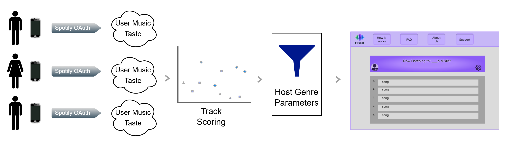

User Flow

Mixlist is a collaborative playlist generator that blends multiple users’ listening preferences to create a shared music experience for parties, cafés, study sessions, and more.
Combines group listening preferences into one shared playlist experience.
Parties, cafés, road trips, study groups, and any shared music setting.
Make music selection collaborative instead of relying on one person’s taste.
Mixlist is designed to make music selection collaborative instead of controlled by one person. By combining multiple users’ listening preferences, it creates a shared playlist that reflects the group as a whole.
Whether you're hosting a party, studying with friends, or running a café, Mixlist ensures the music fits everyone in the room.
Music choices are usually controlled by one person, which doesn’t reflect group preferences.
Mixlist blends listening data from multiple users into one shared playlist.
A balanced, dynamic playlist that adapts to everyone’s taste.
Major: Computer Science
Backend
Major: Computer Science
Frontend
Major: Computer Science
Frontend
Major: Information Technology
Backend
Mixlist is a collaborative music application designed to generate playlists
that reflect the combined musical tastes of a group.
While music streaming
services provide personalized recommendations for individuals, they offer
limited tools for creating playlists that adapt to the preferences of multiple
listeners in shared environments such as social gatherings, workplaces, or
small businesses.
Mixlist addresses this challenge by allowing users to
authenticate through Spotify, join a shared session, and contribute their
listening preferences to a dynamically generated group playlist. The system
aggregates listener taste profiles and assigns weighted values to songs in order
to construct playlists that balance the preferences of all participants.
By
leveraging Spotify’s API and real-time session management, Mixlist creates a
shared listening experience that adapts as participants join or leave the session.

| Priority | User Story | Requirement |
|---|---|---|
| High P1.1 |
User Authentication As a listener, I want to authorize Spotify via OAuth verification. |
|
| High P1.2 |
Create Session As a Mixlist host, I want to create a Mixlist session so that listeners can join it. |
|
| High P1.3 |
Listener Joins Session As a listener, I want to join a Mixlist using a link or QR code. |
|
| High P1.4 |
Playlist Generation As a Mixlist host, I want to automatically generate a playlist based on participating users' music tastes. |
|
| High P1.5 |
Real-Time Updates As a listener and host, I want to see updates on the music feed that reflects the current group’s taste. |
|
| Medium P2.1 |
Delete Session As a Mixlist host, I want to delete a Mixlist session. |
|
| Low P3.1 |
Leave Session As a listener, I want to leave a Mixlist session. |
|
| Low P3.2 |
Remove User As a Mixlist host, I want to remove a user from the session to maintain control. |
|
| Low P3.3 |
Profile Creation As a listener, I want to create a profile. |
|

React JS, Tailwind CSS : React's design allows Mixlist's UI to update automatically as session data changes. Tailwind CSS provides a consistent user experience across the platform.
Web server (Node.js + Express JS): - Mixlist uses Node.js with Express to handle API requests, manage sessions, and communicate with the Spotify API and OAuth services. This architecture allows multiple users to participate in a session while keeping API usage efficient and within Spotify’s rate limits.
Web server (Node.js): - Node.js processes listener taste profiles and combines them into a shared
group preference. This enables Mixlist to dynamically generate and update playlists as users join or
leave a session.
Database:
MySQLite - Mixlist uses SQLite to store lightweight session metadata such as session IDs, listener
references, and playlist identifiers. Music files and personal user data are not stored locally, as
playlists are created and managed through the Spotify API.
This matrix shows how each interface component connects to user actions, frontend behavior, and the API calls that power the Mixlist experience.
| User Interface Component | User Action | Frontend Response | API Request |
|---|---|---|---|
| “Log in with Spotify” Button | User logs into Mixlist | Redirect user to Spotify OAuth page | GET /auth/login |
| “Agree” Button | User authorizes Spotify profile access | Spotify returns authorization and sends user back to application | GET /auth/callback |
| “Join Mixlist” or “Host Mixlist” Buttons | User selects session participation | Redirect user to Join Mixlist page or Create Mixlist page | NONE |
| “Mix your mood” Field + “Create” Button | Host sets parameters and creates a Mixlist | Session is created with selected parameters | POST /[session] |
| “Join” + “Scan QR Code” Buttons | Listener joins session through QR code or session ID | System retrieves session ID | GET /[sessionID] |
| Invite Icon | User invites additional listeners | System generates link, code, or QR code | GET /[sessionID] |
| Play / Pause / Skip Buttons | Host controls playback | Manipulate music state | Spotify API |
| “Leave Mixlist” Button | Listener leaves Mixlist | Remove listener from session | DELETE /[listenerID] |
| “End Session” in Host Settings | Host ends Mixlist | Send request to end session and wipe listener data | DELETE /[sessionID] |
This matrix shows how backend components connect to APIs, system behavior, and the routes that support authentication, session management, aggregation, and playlist generation.
| Backend Component | API | System Action | API Route |
|---|---|---|---|
| Authentication | Spotify OAuth | Redirect user to Spotify OAuth page | GET /auth/login |
| Authentication | Spotify OAuth | Exchange authorization code for temporary access token | GET /auth/callback |
| Session Management | Database | Create new session and generate session ID | POST /sessionID |
| Taste Aggregation | Spotify API | Combine listener taste profiles and calculate track weights | GET /[sessionID] |
| Playlist Generation | Spotify API | Generate playlist using weighted tracks | POST /[playlist] |
| Session Management | Database | Retrieve session ID for invite link, code, or QR code | GET /[sessionID] |
| Listener Management | Database | Remove listener from Mixlist session | DELETE /[listenerID] |
| Session Management | Database | End Mixlist session | DELETE /[sessionID] |
The sprint plan outlines the phased development of Mixlist, including setup, integration, core features, and final deployment.

Unit testing focuses on verifying that individual Mixlist components and endpoints behave correctly on their own before they are combined into the full application flow.
| Test Case | Component / Endpoint | Input / Action | Expected Output |
|---|---|---|---|
| Spotify Login Redirect | Authentication GET /auth/login |
User clicks “Login with Spotify” | User is redirected to the Spotify OAuth page |
| Token Exchange | Authentication GET /auth/callback |
Valid Spotify authorization code | Access token is stored and expiration is recorded |
| Session Creation | Session Management POST /sessionID |
Host creates a new Mixlist | Unique session ID is created and session is marked active |
| Listener Join | Listener Management | Valid room code or QR join | Listener is added to the session successfully |
| Listener Leave | Listener Management | Listener clicks leave | Listener is removed from the active participant list |
| Group Profile Aggregation | Aggregation Management GET /[sessionID] |
Multiple listener taste profiles | Combined group taste profile is returned consistently |
| Playlist Weighting Logic | Aggregation + Playlist Logic | Same listener set and same host settings | Same weight distribution and repeatable output |
| Playlist Generation | Playlist Generation POST /[playlist] |
Group taste profile plus host parameters | Playlist object is created and Spotify playlist is returned |
Integration testing verifies that major Mixlist components work together correctly, especially across authentication, session creation, aggregation, and playlist updates.
| Test Case | Components Involved | Input / Action | Expected Output |
|---|---|---|---|
| Host Login to Session Creation | Frontend + Auth + Session Management | Host logs in and creates Mixlist | Session is created and linked to the authenticated host |
| Listener Join Flow | Frontend + Session Management + Listener Management | Listener enters room code or scans QR code | Listener appears in the active session |
| Join Updates Aggregation | Listener Management + Aggregation | New listener joins | Group taste profile recalculates |
| Aggregation to Playlist Pipeline | Aggregation + Playlist Generation | Updated group profile is sent to the generator | Playlist updates with combined preferences |
| Listener Leave Update | Listener Management + Aggregation + Playlist | Listener leaves session | Listener is removed and playlist recalculates |
| Session End Cleanup | Session Management + Data Cleanup | Host ends Mixlist | Session closes and listener/session data is cleared |
Performance testing evaluates how well Mixlist handles high activity, repeated API requests, and multiple active sessions while remaining stable and responsive.
| Test Case | Scenario | What We Measure | Expected Result |
|---|---|---|---|
| Concurrent Listener Joins | Multiple users join the same session at once | Response time, session stability | Users are added without failures or duplicate state |
| Playlist Refresh Under Load | Users repeatedly join and leave during an active session | Update latency | Playlist updates stay responsive |
| Multiple Active Sessions | Several hosts run sessions simultaneously | Backend stability, memory and session tracking | Sessions remain isolated and stable |
| Spotify Request Volume | Repeated profile and playlist-related API calls | Request frequency and failures | System stays within Spotify rate limits |
| Burst Testing | Rapid sequence of join, leave, and refresh actions | Error rate and crash resistance | App remains functional without crashing |
| Spotify API Rate Limit Handling | Repeated profile fetches, playlist creation, and playlist update requests | Throttle behavior and recovery | System stays within Spotify’s rolling rate window and recovers cleanly from HTTP 429 responses |
The traceability matrix links each major user story to a specific test case, showing how project requirements are verified through testing.
| User Story | Description | Test Case Verifying It |
|---|---|---|
| US-1 | Host can create a music session | Multiple Active Sessions |
| US-2 | Listener can join a host session | Concurrent Listener Joins |
| US-3 | Playlist updates dynamically as listeners join or leave | Playlist Refresh Under Load |
| US-4 | System aggregates listener music taste profiles | Spotify Request Volume |
| US-5 | Playlist is generated based on group preferences | Spotify API Rate Limit Handling |
| US-6 | System remains stable during heavy user activity | Burst Testing |
Mixlist uses Spotify listening data to create collaborative playlists, so privacy, fairness, and temporary data use are important parts of the system design.
Music preferences can be very personal and may sometimes reveal sensitive information about a person, including beliefs, emotional state, or interests. Because Mixlist uses Spotify listening data to generate a collaborative playlist, users should understand how their information is being used during a session.
To address this, users must log in and authorize access through Spotify OAuth before joining a Mixlist session. This gives the system temporary access to the listening data needed to generate the shared playlist, without accessing unrelated personal information.
Recommendation systems can sometimes favor more popular songs or genres, which may underrepresent users with less common music tastes. Mixlist attempts to reduce this issue by combining the preferences of all participants and assigning track weights based on the group’s overall listening profile.
Another important concern is how long participant data remains accessible. To protect user privacy, Mixlist stores listening data and Spotify access tokens only for the duration of an active session. If a listener leaves or the host ends the session, the associated listener data and tokens are removed from the system.